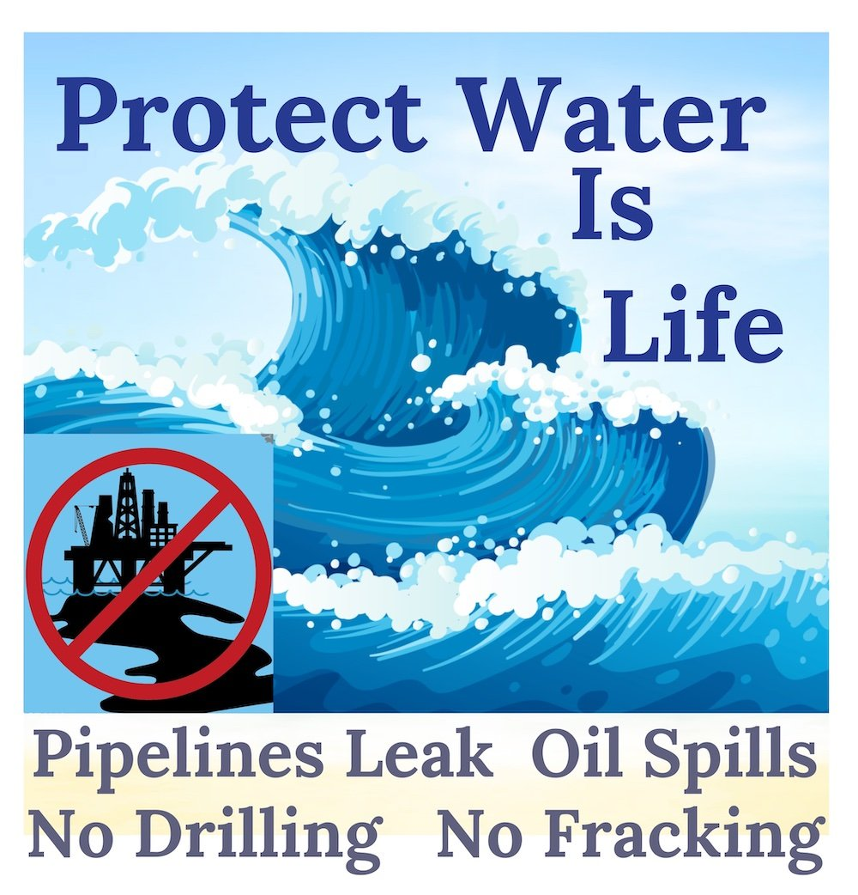

Preserving life below water is a crucial aspect of environmental conservation and sustainability efforts worldwide. With oceans covering more than 70% of the Earth's surface and containing about 97% of the planet's water, the health of marine ecosystems is vital for the well-being of both marine life and humanity. This webpage aims to explore the importance of preserving life below water, the challenges it faces, and the actions individuals and organizations can take to protect our oceans and marine biodiversity.
Our oceans function as an integral part of Earth's environmental systems. They influence weather patterns, distribute heat around the globe, and drive the water cycle. The vast circulation of ocean currents acts as a global conveyor belt, transporting nutrients, heat, and carbon dioxide.
For example, the Gulf Stream, a powerful warm current in the Atlantic Ocean, carries warm water from the tropics to the North Atlantic, influencing the climate of coastal areas in Europe. The upwelling of nutrient-rich waters along the coasts of Peru and California supports thriving fisheries, fueling local economies and providing a vital source of protein for millions of people. By understanding these complex relationships, we can better appreciate the interconnectedness of our world and the need to protect and preserve our oceans.
Unfortunately, our oceans face a myriad of threats that endanger their delicate balance. Pollution from oil spills, plastics, and chemical runoff poses a severe risk to marine life. The devastating impact of oil spills on marine ecosystems can be seen in heartbreaking images of oil-coated birds and marine mammals struggling to survive.
Plastic pollution is another significant threat. Every year, millions of tons of plastic waste end up in the ocean, harming marine life through entanglement, ingestion, and habitat destruction. From sea turtles mistaking plastic bags for jellyfish to seabirds with stomachs full of plastic debris, the consequences of our plastic addiction are devastating.
Overfishing is yet another pressing issue. As demand for seafood increases, unsustainable fishing practices deplete fish populations, disrupt food chains, and threaten the livelihoods of coastal communities. Destructive fishing techniques, such as bottom trawling, not only damage the seafloor but also result in the unintended capture of non-target species, known as bycatch. Additionally, the devastating impacts of climate change, such as rising sea temperatures and ocean acidification, have far-reaching consequences for marine ecosystems. Coral reefs, for instance, are highly vulnerable to the effects of climate change. Rising sea temperatures can cause coral bleaching, a phenomenon where corals expel the colorful algae that provide them with nutrients, leaving them vulnerable to disease and death.
One inspiring example of successful marine conservation efforts is the Great Barrier Reef Marine Park in Australia. Through strict regulations, this UNESCO World Heritage Site has managed to preserve the biodiversity of the reef while allowing for sustainable tourism and fishing practices. The park serves as a model for effective marine management, demonstrating that conservation and human activities can coexist harmoniously. Another success story comes from the Chagos Archipelago in the Indian Ocean. The establishment of a marine protected area has led to the recovery of coral reefs and an increase in fish populations, showcasing the potential for conservation measures to restore and protect our oceans. These case studies offer hope and inspiration for the future of marine conservation.
Ocean pollution, particularly from plastic waste, has reached crisis levels. It is estimated that by 2050, there will be more plastic in the ocean than fish. This alarming statistic calls for immediate action from individuals, governments, and businesses alike. Education and awareness are crucial in combating ocean pollution. By promoting responsible waste management practices and supporting innovative solutions such as ocean cleanup technologies, we can make a significant impact in preserving our oceans for future generations. One approach to tackling ocean pollution is through the implementation of recycling programs. These programs aim to reduce the amount of plastic waste that ends up in our oceans by encouraging individuals to recycle their plastic products. Additionally, efforts are being made to develop biodegradable alternatives to plastic, which would significantly reduce the amount of plastic waste entering our oceans. Furthermore, it is essential to address the issue of illegal dumping and littering. Stricter regulations and penalties can deter individuals and businesses from disposing of their waste improperly, ensuring that our oceans remain clean and free from pollution.
Climate change poses unprecedented challenges to marine life. Rising sea temperatures lead to coral bleaching, the spread of harmful algal blooms, and the disruption of food chains. Ocean acidification threatens the ability of shell-forming organisms to build their protective structures, affecting entire ecosystems. Addressing climate change requires a global effort to reduce greenhouse gas emissions, transition to renewable energy sources, and enhance resilience in marine ecosystems. By taking meaningful action today, we can protect the oceans that future generations deserve. One approach to mitigating the effects of climate change on marine life is through the restoration and protection of coastal habitats. Coastal wetlands, such as mangroves and seagrass beds, act as natural carbon sinks, absorbing and storing large amounts of carbon dioxide. Protecting and restoring these habitats can help reduce the impacts of climate change on marine ecosystems. Furthermore, promoting sustainable fishing practices can also contribute to climate change mitigation. By reducing overfishing and implementing ecosystem-based management approaches, we can help maintain the balance of marine ecosystems and their ability to sequester carbon.
Protecting and preserving our oceans is not just an ecological imperative; it is a moral responsibility. Our oceans provide us with life, sustenance, and wonder. They connect us, regardless of borders, and remind us of our shared humanity. Through understanding, cooperation, and sustainable practices, we can safeguard life below water for generations to come. The challenges we face may seem daunting, but by working together, we can unlock the full potential of our oceans and ensure a future where marine life thrives and the beauty of the underwater world endures.